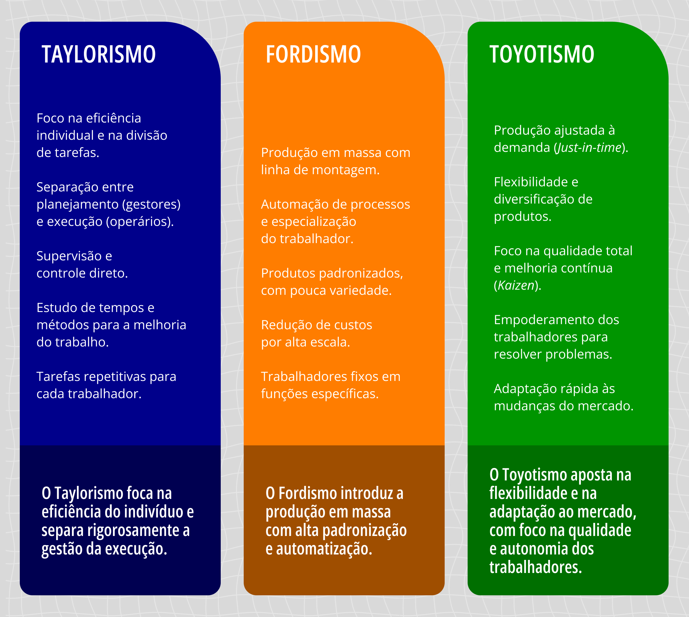
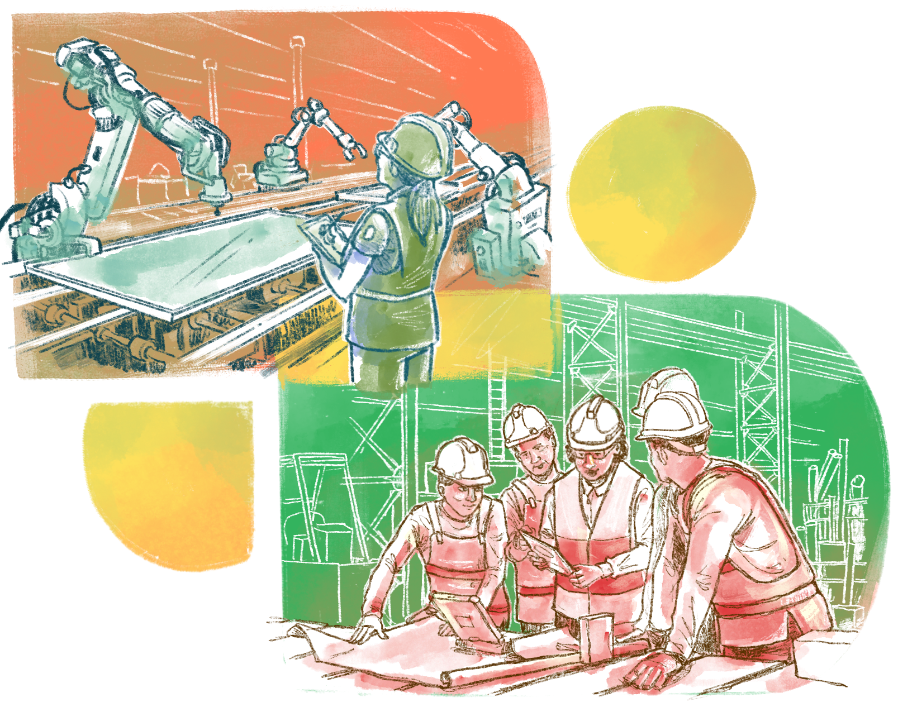

CAPÍTULO 2
O que é Gestão Democrática na EPT?

A tendência democrática, intrinsecamente, não pode significar apenas que um operário manual se torne qualificado, mas que cada cidadão possa se tornar governante.
(Antonio Gramsci, Cadernos do Cárcere)
Conforme vimos na discussão do capítulo anterior, a democracia não é um produto, mas um processo árduo e permanente que visa ampliar todos os meios e mecanismos de participação, de modo que os membros envolvidos no processo formativo sintam-se parte – e motivados a tomarem parte – nas decisões. Muitas vezes, o sentido da gestão em EPT é distorcido, por sua relação indevida com a administração empresarial ou mesmo com a administração escolar em seu sentido amplo. (2010) alerta que, quando pensamos que a figura mais importante do processo é o gestor, corremos o risco de reduzir a gestão democrática a um taylorismo.
Para os estudos da administração (ou gestão) escolar, o que surpreende não é a existência do discurso que valoriza a figura do diretor, pois, como vimos, ele vem-se repetindo há muito tempo. O que intriga é a relativa escassez, no âmbito das investigações sobre a realidade escolar no Brasil, de estudos e pesquisas a respeito da natureza e do significado das funções do diretor de escola à luz da natureza educativa dessa instituição
Convém lembrarmos as peculiaridades da EPT, que é um projeto ético-político em consonância com a suas nuances metodológicas e pedagógicas, não podendo ser concebida ou gerida como uma empresa ou mesmo como um processo formativo genérico. Isso porque nas empresas o foco recai sobre a produção (processos e produtos), que visa, em geral, a um vínculo com o protagonismo do capital. Da mesma forma, por sermos, na EPT, as primeiras organizações mundiais que pretendem levar em conta oque possibilita a, precisamos ter consciência do sentido da administração, mas sem que isso seja descontextualizado. Podemos, aqui, delimitar a gestão como a utilização de todo e qualquer recurso que possa mediar racionalmente os processos visando uma aprendizagem cidadã.
Segundo Paro (2010), o conceito de administração deve ser compreendido pelo seu caráter generalizante, capaz de englobar todos os tipos de gestão sem considerar as particularidades de cada área. Importa menos a natureza daquilo que é administrado do que o objetivo da administração em si – que é a racionalização de recursos para um determinado fim. É por esse motivo que podemos considerar a administração em diferentes contextos: a industrial, a pública, a escolar etc.
Politecnia e Antipolitecnia
As empresas valem-se da administração científica, comumente vinculadas ao Taylorismo (deixar claro quem manda e quem obedece), ao Fordismo (automatizar os processos de produção) e ao Toyotismo (ler, interpretar e obedecer os ditames do mercado), sendo que nesses modelos de gestão o trabalhador nunca é considerado como sujeito, mas como mero objeto para a ampliação (ou não) do lucro ou da produção. Entretanto precisamos considerar que os processos e a gestão – principalmente a gestão democrática – precisam ir além do mercantilismo instrumental, no qual o capital é a única coisa que importa e as pessoas passam a ser apenas entendidas como meros objetos. Nesse sentido, em EPT a educação não pode ser gerida como numa unidade produtiva, pois nossa missão é inserir o estudante no mundo do trabalho como protagonista e não como objeto ou mera mão de obra barata. Confira no infográfico abaixo as principais diferenças entre os modelos de gestão mencionados:

Titulo: Taylorismo, Fordismo e Toyotismo
Fonte: Prosa (2024b).
Vitor Paro (2010) alerta para essa especificidade da gestão do trabalho docente ou do trabalho pedagógico visando o fim da gestão escolar, que, em termos gerais, não tem a mesma natureza das empresas. Trata-se de identificar que o trabalho do professor é diferente de outras formas de trabalho. Por exemplo, numa olaria que produz tijolos, o processo é repetitivo, uniforme, linear e automático. A música "Another Brick in the Wall", do Pink Floyd, representa bem essa tentativa de uniformização e diluição das diferenças na unicidade. Entretanto, a instituição de EPT não é uma fábrica de tijolos, nem qualquer outra indústria, e, portanto, a gestão não pode ser compreendida segundo uma lógica taylorista, fordista ou toyotista. Nosso objetivo não é formarmos, como numa esteira fabril, pessoas submissas e alienadas para um determinado fim, mas produzir uma gestão que compreenda que a relação entre educação e formação omnilateral pressupõe empoderamento e autonomia dos indivíduos.
A hierarquização das decisões presentes no Taylorismo é retratada no filme "Tempos Modernos", de Charles Chaplin, em que se percebe em tela a formação técnica reduzida a esforços e gestos repetitivos, realizados sem reflexão, voltados exclusivamente para atender às demandas do setor de produção de artefatos. Não pode haver democracia e gestão democrática no taylorismo (ou na gestão taylorista) porque a premissa de controle dos processos e das pessoas nesse modelo é similar à dialética do senhor e do escravo, concebida por. No longa metragem, tem-se claramente a ideia de que o tempo é a premissa básica da economia na produção, e, por isso, o trabalhador precisa ser controlado – por máquinas ou por pessoas – para apenas produzir, embora não saiba o porquê de produzir o que está produzindo e desconheça o que está no fim da esteira do processo produtivo. "Tempos Modernos" é uma representação que vai na contramão da politecnia .
Na antipolitecnia da produção em série, cada um executa apenas sua função sem saber por que e sem conhecer o todo. A gestão do tempo e das pessoas não é para um propósito ou finalidade fundada no bem comum, mas no simples propósito de atender as demandas do senhorio. A visão expressa nesse tipo de gestão é a aplicação do à produção. No caso do Fordismo, a meta é não perder tempo, ou mesmo controlar o tempo do trabalhador para que ele entregue não aquilo que o realize ou humanize, mas sim a demanda específica e a necessidade imediata do dono do capital.
Na primeira parte da obra A Riqueza das Nações, Adam Smith (1983) sugeriu que a produção de alfinetes seria ampliada e potencializada se cada trabalhador fizesse apenas uma parte do processo fabril, especializando-se e fixando-se no fazer automatizado, sem precisar conhecer todas as etapas da produção ou pensar em qual seria a melhor forma de produzir esse objeto. Em outras palavras, quem aponta o alfinete deve saber apenas apontar; quem for fazer a cabeça do alfinete ou a cromação, e assim por diante, não precisaria saber nada além do próprio ofício. Nesse sistema, a produção das peças potencialmente aumentaria, e a formação dos trabalhadores não demandaria uma base geral e ampla, mas específica e superficial, considerando que suas necessidades de aprendizagens também seriam bem instrumentais.

Titulo: A Evolução no Processo Produtivo
Fonte: Prosa (2024d).
Dessa forma, ainda que a ideia de otimizar o tempo e reduzir os custos (como no Toyotismo) considere a qualidade total dos processos, o trabalhador em si não é o sujeito central – ele é apenas parte acidental para potencializar a produção e expandir o lucro. Pensando na EPT, é imprescindível que a gestão do ensino e da aprendizagem não confunda as noções de eficiência e eficácia, que se baseiam estritamente na questão monetária.
Dito de outro modo, na gestão empresarial, consideramos algo eficaz quando cumpre sua finalidade de aumentar o lucro e diminuir os custos, e são eficientes os processos ou técnicas que cumprem esse objetivo. Mas, no caso do ensino, o valor gasto com a educação ou a formação não pode ser entendido apenas como gasto, pois é investimento. Nessa perspectiva, o critério meramente quantitativo (aplicado às empresas) para interpretar dados sobre educação pode não fazer sentido. Tomemos como exemplo uma turma de EJA que iniciou com 35 estudantes e terminou com 15. Por mais que a instituição possa ter investido em fluxos e processos, a eficácia, nesse sentido, não ocorreu como o esperado, já que existem muitas causas e fatores que podem ter causado o insucesso. E, ainda que se tivesse formado apenas um indivíduo, ele é merecedor do investimento do Estado, considerando que a educação é direito fundamental.
Isso posto para elucidar que, em se tratando de qualidade e valor, no sentido ético e moral, a mera tabulação de investimento e resultados não resolve a diferença entre eficiência e eficácia. Embora existam plataformas como a para registrar todos os fluxos do acesso, da permanência e do êxito de nossos estudantes, ela não tem como registrar o valor e a importância do conhecimento na vida de cada indivíduo.
Em EPT, a noção de eficiência tem relação com o cumprimento de nossa missão diante das bases legais e conceituais, enquanto a eficácia tem relação com o resultado disso, do ponto de vista dos fluxos diversos nas ações diretas e indiretas do ensino. Por isso, não podemos reduzir eficiência e eficácia ao meramente burocrático, ao quantitativo e ao orçamentário. A dimensão orçamentária é fundamental para o andamento das ações de ensino e aprendizagem, mas os processos relacionados ao resultado de nossas ações, a nossa atividade-fim devem ser os critérios primeiros ao avaliarmos o sentido do que fazemos enquanto instituição educacional.
A educação básica é investimento e não despesa corrente – é um direito humano fundamental, e não um favor do Estado. Por isso, precisamos ter em mente que:
Embora sejam várias as motivações para essa valorização da administração escolar – e não faltam aqueles que são a favor de uma maior “eficiência” da administração escolar com a única ou precípua preocupação com os custos do ensino –, a justificativa comum é a de que o ensino é importante, e é por isso que se deve realizá-lo da forma mais racional e eficiente; portanto, é fundamental o modo como a escola é administrada
Devemos considerar que o termo eficiência, usado inclusive nas decisões orçamentárias para a rede federal, por exemplo, carrega uma contradição grave. Claro que precisamos, em termos de gestão, otimizar recursos e valorizar o resultado dos processos empreendidos, entretanto a educação não objetiva fabricar coisas, e não há como mensurar o progresso humano de alguém com a régua do quantitativo.
Quando falamos em políticas públicas destinadas à transformação da escola básica, Paro (2010) salienta que devemos ter em mente que a gestão do espaço escolar deve estar preocupada com a educação em sua especificidade, entendendo-a como um espaço pedagógico em construção. Essa visão implica, necessariamente, na articulação entre a administração e a práxis social e política.